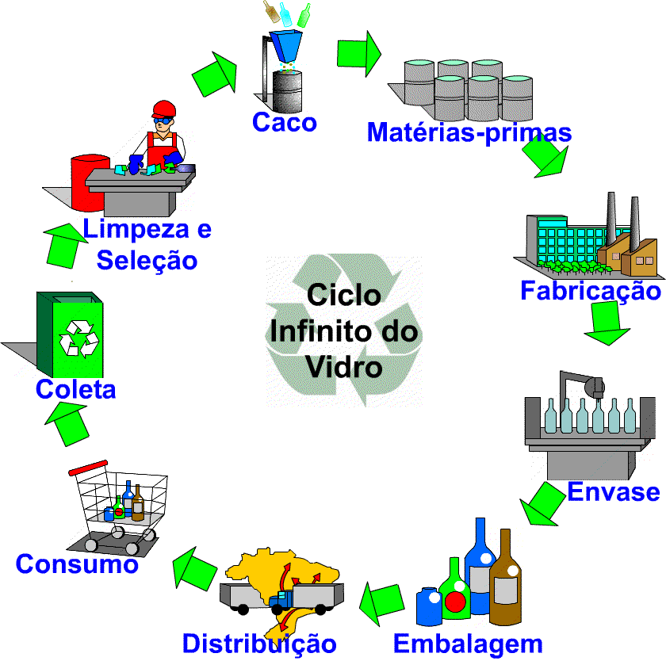

O vidro é um composto inorgânico, sólido e sem forma determinada, originado pela fusão e posterior resfriamento de óxidos ou derivados, até a obtenção de condição rígida, sem cristalização. Sua utilização é extremamente ampla, abrangendo garrafas, pratos, copos, peças de decoração, frascos para produtos farmacêuticos, janelas, partes de eletrodomésticos e eletroeletrônicos, etc. A reciclagem do vidro reduz o consumo de energia e matérias-primas extraídas da natureza para sua fabricação e contribui para a melhoria das condições de limpeza pública e redução do volume de resíduos em aterros e lixões. Além disso, o vidro possui a vantagem de ser 100% reciclável, podendo ser reaproveitado inúmeras vezes, sem perdas.
